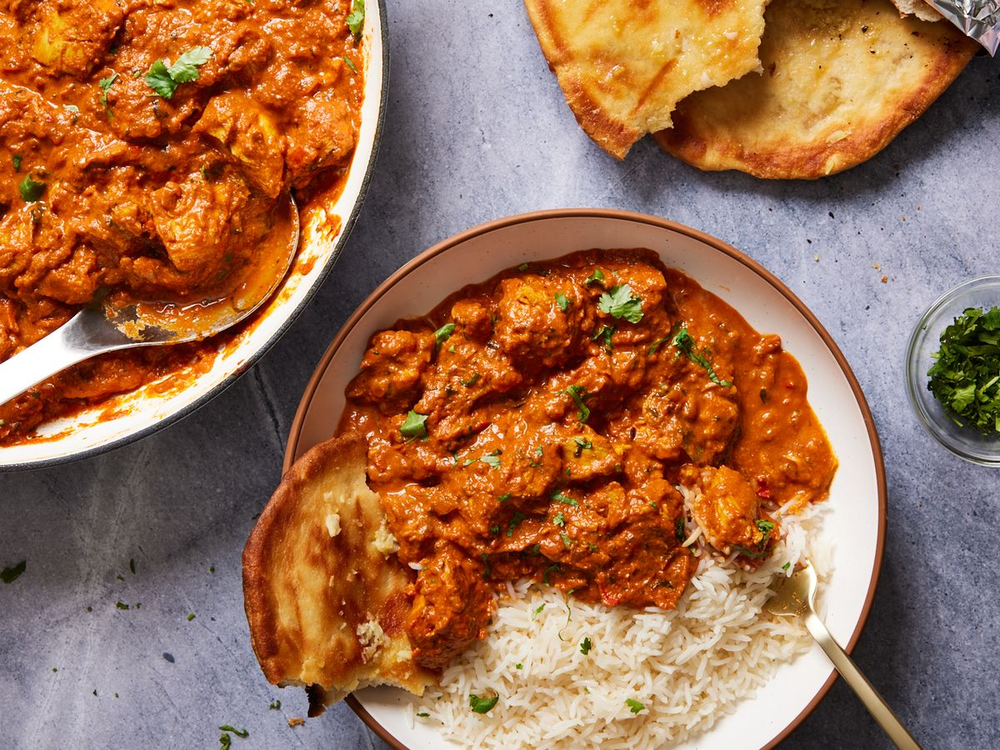

My host family always preferred to make BLAT sandwiches for me during high school. It is a delicious variation of the classic BLT sandwich, with the addition of avocado.
Recipe Ingredients
- 4 slices of bread (common choices include white, wheat, or sourdough)
- 8 slices of bacon, cooked until crispy
- 1 ripe avocado, sliced
- 1 large tomato, thinly sliced
- Lettuce leaves (such as iceberg or romaine)
- Mayonnaise
- Salt and pepper to taste
Recipe Steps
- Cook the Bacon: In a skillet or on a griddle over medium heat, cook the bacon slices until they are crispy and browned. Place them on paper towels to drain excess grease.
- Prepare the Avocado: Cut the ripe avocado in half, remove the pit, and slice the avocado flesh into thin slices.
- Slice the Tomato: Slice the large tomato into thin rounds. Sprinkle the tomato slices with a pinch of salt and pepper to enhance their flavor.
- Assemble the Sandwich.
Additional Food images


Stewed eggs with Minced Meat
Origin: Hong Kong
Source: Family Recipe
Category: Main
My family cooked stewed eggs with minced meat during dinner to taste it together because it is a tasty and comforting dish that is popular in many cuisines.
Recipe Ingredients
- 4-6 large eggs
- 200 grams (about 7 ounces) of ground meat
- 1 small onion, finely chopped
- 2 cloves of garlic, minced
- 1 tablespoon vegetable oil
- 1 cup chicken or vegetable broth
- 2 tablespoons soy sauce
- 1 teaspoon sugar
- Salt and pepper to taste
- Chopped green onions or cilantro for garnish (optional)
Recipe Steps
- Place the eggs in a saucepan and cover them with cold water. Bring the water to a boil over high heat.
- Once boiling, reduce the heat to low, cover the saucepan, and let the eggs simmer for about 9-12 minutes for hard-boiled eggs or less time for softer yolks.
- After cooking, transfer the eggs to a bowl of ice water to cool quickly.
- Once cooled, peel the eggs and set them aside.
- In a separate skillet or pan, heat the vegetable oil over medium heat.
- Add the chopped onion and minced garlic, and sauté until they become fragrant and translucent about 2-3 minutes.
- Add the ground meat and cook until it's browned and cooked through, breaking it into small pieces as it cooks.
- Stir in the soy sauce, sugar, and a pinch of salt and pepper. Adjust the seasoning to your taste.
- Cook for an additional 2-3 minutes to allow the flavors to meld.
- Pour in the chicken or vegetable broth, and bring the mixture to a simmer.
- Let it simmer for about 5-7 minutes, allowing the broth to reduce slightly and thicken.
- Gently place the peeled eggs into the simmering meat and broth mixture. Spoon some of the liquid over the eggs to coat them.
- Continue to simmer for an additional 5-7 minutes, allowing the eggs to absorb the flavors of the sauce.
- Spoon the meat and sauce over the eggs.
Additional Food images


Chicken Masala
Origin: Indian
Source: Family Recipe
Category: Main

My sister learned Chicken Masala in her school which is a flavorful and aromatic Indian dish that features tender chicken cooked in a rich and spiced tomato-based sauce.
Recipe Ingredients
- 1.5 pounds boneless, skinless chicken thighs or breasts, cut into bite-sized pieces
- 1/2 cup plain yogurt
- 1 tablespoon ginger-garlic paste (a mixture of minced ginger and garlic)
- 1 teaspoon ground turmeric
- 1 teaspoon ground cumin
- 1 teaspoon ground coriander
- 1 teaspoon paprika or Kashmiri red chili powder (adjust for spiciness)
- 2 tablespoons vegetable oil or ghee (clarified butter)
- 1 large onion, finely chopped
- 2 teaspoons ginger-garlic paste
- 1 teaspoon ground cumin
- 1 teaspoon ground coriander
- 1 teaspoon ground turmeric
- 1 teaspoon paprika or Kashmiri red chili powder (adjust for spiciness)
- 1 teaspoon garam masala
- 1 can (14 ounces) crushed tomatoes or 3-4 fresh tomatoes, pureed
- 1/2 cup heavy cream or coconut milk (for a creamy version)
Recipe Steps
- In a bowl, combine the yogurt, ginger-garlic paste, ground turmeric, ground cumin, ground coriander, paprika or chili powder, and salt.
- Add the chicken pieces to the marinade, ensuring they are well-coated. Cover and refrigerate for at least 30 minutes, or if time permits, marinate for a few hours or overnight for maximum flavor.
- Heat the vegetable oil or ghee in a large, heavy-bottomed skillet or pan over medium heat.
- Add the chopped onion and sauté until it turns soft and translucent, about 4-5 minutes.
- Add the ginger-garlic paste and sauté for another 1-2 minutes until the raw aroma disappears.
- Stir in the ground cumin, ground coriander, ground turmeric, paprika or chili powder, and garam masala. Cook for 1-2 minutes, allowing the spices to bloom.
- Add the marinated chicken to the pan and cook for about 5-7 minutes, stirring occasionally, until the chicken is lightly browned.
- Pour in the crushed tomatoes or tomato puree and mix well. Reduce the heat to low, cover, and simmer for about 15-20 minutes, or until the chicken is cooked through and the sauce has thickened.
- Garnish the Chicken Masala with fresh cilantro leaves.
- Serve hot with steamed rice, naan bread, or roti (Indian flatbread).
Additional Food images



Coca-Cola Chicken Wings
Origin: Jinan, Shandong
Source: My Recipe
Category: Main

I learned how to cook Coca-Cola chicken wings during the summer because it is a sweet and savory dish with a unique flavor.
Recipe Ingredients
- 2 pounds (about 900 grams) chicken wings, separated into drumettes and flats
- 1 can (12 ounces) Coca-Cola (or any cola soda)
- 1/4 cup soy sauce
- 1/4 cup ketchup
- 1/4 cup brown sugar
- 2 cloves garlic, minced
- 1 teaspoon ginger, grated or minced
- 1/2 teaspoon salt
- 1/4 teaspoon black pepper
- 1/4 teaspoon red pepper flakes (optional, for heat)
- 2 tablespoons vegetable oil
- Sesame seeds and chopped green onions for garnish (optional)
Recipe Steps
- In a large bowl, combine the Coca-Cola, soy sauce, ketchup, brown sugar, minced garlic, grated ginger, salt, black pepper, and red pepper flakes (if using). Mix until the sugar is dissolved and the ingredients are well combined.
- Add the chicken wings to the marinade, making sure they are fully coated. Cover the bowl and refrigerate for at least 30 minutes to marinate.
- Heat the vegetable oil in a large skillet or frying pan over medium-high heat.
- Remove the chicken wings from the marinade and shake off any excess liquid. Reserve the marinade for later use.
- Place the chicken wings in the hot skillet and cook them until they are browned on all sides and cooked through, about 10-15 minutes.
- While the chicken is cooking, pour the reserved marinade into a saucepan and bring it to a boil.
- Reduce the heat and simmer the sauce for about 10-15 minutes, or until it thickens and reduces by about half. Stir occasionally.
- Once the chicken wings are cooked and crispy, remove them from the skillet and place them on a paper towel-lined plate to drain excess oil.
- Pour the thickened Coca-Cola sauce over the cooked chicken wings.
- Garnish the Coca-Cola chicken wings with sesame seeds and chopped green onions (if desired).
Additional Food images